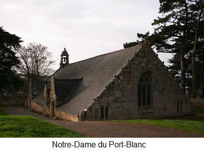
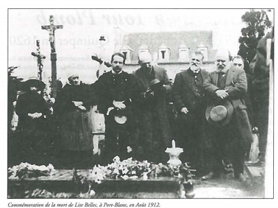

Itron Varia ar Porzh Gwenn
Texte recueilli par Anatole Le Braz auprès de Lise Bellec en 1892
Mélodie inconnue.
Remplacée par la mélodie "Valse des marins" de Pierre Bluteau
|
ITRON VARIA AR PORZH-GWENN 1. Seizh lestr partijont asamblez, Partijont a gostez Londrez, Ha teujont war-zu Breizh-Izel Vit massakriñ ar bobl fidel. 2. Med Itron Varia ar Porzh-Gwenn Emañ he zi war an dosenn. Emañ he zi war an dosenn, A wel ar Zaozon deus a-bell 3. Itron Varia ar Porzh-Gwenn A ra soudarded gant raden, Kant mil den armet hag ouzhpenn Dampich ar Zaozon da ziskenn; 4. Kerkent, hi e-deus permitet Naje ar radenn da zoudarded Etre Porz-Gwenn ha Krech-Marted A oa kant mil a zoudarded. 5. Ha pa zellent er chostez all A welent mui pe gemendall Tre Plougouskant hag ar Porzh-Gwenn Holl a oant formet gant radenn. 6. Zoudarded vailhant, armet mat, Prest da reiñ dar Zaozon kombat. Kement garreg a oa war-dro A oa nem cheñchet e forchoù. 7. A oa nem cheñchet e forchoù, E forchoù leun a ganolioù Kreach ar Gontez, war an uhel Weler anezhañ di a-bell 8. Biskoazh sur ar Zaoz na welaz Kement demeuz a bopulaz. Poant en dro dar vaz-pavillon E klevent ar musik o sôn. 9. Tofek, Perroz ha Louannek A oa leun gouch a zoudarded Jentilez, Rouzik ha Bono Oa fortifiet tro-war-dro 10. Gant mogerioù inkomprenabl Do spered ha do daoulagat. Tud Breizh-Izel hed a kostez A zo en spouron noz ha deiz, 11. A zo en spouron noz ha deiz Gant aon na da goll o buhez. Mouez ar chanolioù a groze Ken a stlake toud ar chontre. 12. Gant an drouz demeus ar tennoù A goueze ar vugaligoù. Paour ha pinvik, yaouank ha kozh, A bartijont e-greiz an noz. 13. Kuitaet o-deus ti ha madoù Ha degarpet er forejoù, N ur bediñ ar Werchez Vari, Jezuz he mab, do frezerviñ. 14. Ar Zaozon a lamm e Gweltraz, Prest da ziskenn dan Douar-braz. Imajoù ar Zent deus bruzhunet, Kloch ar chapel o-deus laeret. 15. Lakaet 'deus hen er wern-gestel Da zon vit ober un appel. Kouezhet eo digante er mor don Ur wech bep seizh vloaz a zon. 16. Evit ma lavaro tud Breiz "Ma kloch Sant Gweltraz er Ger-Iz... Paz oa partiet ar Zaozon Oa rejouiset o chalon! 17. Pa int retornet do chontre, D eus savet un iliz nevez. Prenet ur gaer a gurunenn Da Itron Varia ar Porzh Gwenn. KLT gant Christian Souchon |
NOTRE-DAME DU PORT-BLANC 1. Sept navires voguant ensemble Ont mis à voile au port de Londres, Pour semer au pays d'Armor Parmi les fidèles la mort. 2. Oui mais à Port-Blanc Notre-Dame Qui tient le haut de la montagne, Qui demeure sur la hauteur A vu, de loin, l'envahisseur: 3. C'est alors que la Sainte Mère Transforme en soldats la fougère: La fougère devient soldats Pour que lAnglais n'accoste pas. 4. Pour que n'accoste point lAnglais, Cent mille, ou plus, hommes armés, Entre Crec'h-Martet et Port-Blanc: Ils sont cent mille, assurément! 5. Dans l'autre sens en regardant: Plus encore, ou bien tout autant. Entre Plougrescant et Port-Blanc Tous faits de fougère et vaillants, 6. Soldats armés de pied en cap Prêts, Saxons, à livrer combat. Et tous les rochers, près ou loin, Les voilà changés en fortins, 7. En redoutes et bastions. Pleins à déborder de canons. Et Crec'h-la-Comtesse aussi bien, Lequel s'aperçoit de fort loin. 8. Jamais l'Anglais ne vit, je crois, Tant de soldatesque à la fois! Quand ils rejoignent leurs huniers, On entend les clairons sonner: 9. Tomé, Perros et Louannec Sont pleins de soldats jusqu'au bec. Sept-Îles, Rouzic et Bono Ne sont que murs et parados: 10. Des ouvrages bien mystérieux Pour leurs esprits et pour leurs yeux. Les gens d'ici pour leur malheur Vivent nuit et jour dans la peur 11. De voir cette engeance honnie Soudain attenter à leur vie! La voix des canons rugissait. Toute la contrée frémissait 12. Et les canons et leur tonnerre Projetaient les enfants à terre. Riche ou pauvre, ou bien jeune ou vieux, La nuit, chacun vide les lieux, 13. Abandonnant maison et biens Pour déguerpir au bois voisin, En priant la Vierge Marie Et Jésus de sauver leur vie. 14. L'Anglais bondit sur Saint Gildas: Jusqu'au continent, plus qu'un pas! Les statues des saints sont brisées Et la cloche ils l'ont emportée, 15. L'ont hissée en haut d'un hunier - On sonne l'appel désormais! - Mais elle choit dans l'océan: Et tous les sept ans, on l'entend, 16. Afin que sonne, à ce qu'on dit, Celle de Gildas à Ker-Is... Quand les Anglais sont repartis, Comme les curs se sont réjouis! 17. Chacun regagne ses pénates. L' église que vous édifiâtes Cache une couronne, un présent A Notre-Dame de Port Blanc. Trad. Christian Souchon (c) 2019 |
OUR LADY OF PORT-BLANC 1. Seven ships together set off They set off from near London And came to the coast of Brittany To slaughter the faithful people. 2. But our Lady of Port-Blanc Has her house on the hill. She has her house on the hill And sees the English from afar. 3. Our Lady of Port Blanc Makes soldiers out of ferns: A hundred thousand armed men if not more To stop the English landing. 4. Instantly she granted That the bracken should turn to soldiers. Between Port-Blanc and Crechmartet There were a hundred thousand soldiers. 5. And when they looked to the other side, They saw more or just as many Between Plougrescant and Port-Blanc. All were created from bracken, 6. Valiant soldiers, thoroughly armed, Ready to battle with the English. Every rock in the area Was turned into a fortress, 7. Was turned into a fortress, A fortress full of cannons. Crech-la-Comtesse up on the heights Can be seen from afar. 8. For sure had the English never Seen such a massive crowd. As they stood around the mainmast, They could hear the music playing. 9. Tomé, Perros and Louannec Were stuffed full of soldiers The Seven Isles, Rouzic and Bono Were fortified in every direction 10. By ramparts astonishing To their eyes and minds. The people of Brittany along the coast Are in dread, day and night, 11. Are in dread, day and night, For fear they will lose their lives. The voice of the cannons rambled So it shook the whole country. 12. The noise from the blasts Made the little children fall down. Poor and rich, young and old Left in the middle of the night, 13. Left their houses and possessions And made for the woods Praying to the Virgin Mary And her son Jesus to preserve them. 14. The English leapt onto the Isle of Gildas, Ready to descend on the mainland. They shattered the images of the Saints And stole the bell from the chapel. 15. They hung it from the mainmast To ring out the call to arms. But it fell from them into the deep sea! Once every seven years it rings. 16. And so the people of Brittany say: "Saint Gildas is ringing in Ker-Is". When the English left Peoples hearts rejoiced. 17. They went back to their lands And built a new church And bought a most beautiful crown For our Lady of Port-Blanc. Transl. Mary-Ann Constantine |
|
[1] Le plus ancien Chant d'Anglais? Selon l'article de Donatien Laurent pour le catalogue de l'exposition "La Bretagne au temps des Ducs" (Daoulas-Nantes, 1991-92), le plus ancien "Chant d'Anglais" serait celui "recueilli par J-M. de Penguern auprès dune fileuse de Taulé en 1845, [qui] relate une descente dAnglais sur les côtes du Haut-Léon". Il s'agit d'un récit, Argadenn Saozon (Descente d'Anglais) dont le caractère historique ne fait guère de doute, même si l'identification du héros "Gaurin" avec Guy de Laval, lieutenant pour le roi et gouverneur de Bretagne, qui repoussa une attaque anglaise contre Morlaix, le 22 juillet 1522, n'est qu'une hypothèse. Le présent chant évoque-t-il des événements plus anciens? Il relate un miracle survenu dans un site marin privilégié, le havre de Port-Blanc, une des rares rades naturelles sur la côte nord de la Bretagne qui, de ce fait, devait être surveillée sans relâche et fut le théâtre de plusieurs épisodes militaires. La chapelle Notre-Dame n'était à l'origine qu'une simple tour de guet (strophe 2 du présent chant) fut pour cette raison placée sous la protection de la Vierge. A la fin du XVème siècle (il semble, nous dit M. Bernard Lasbleiz, chercheur associé au CRBC, dans un article de "Musique Bretonne" N° 163, nov. déc. 2000 qu'on puisse dater ces événements de 1492), les habitants du lieu décidèrent de lui édifier une chapelle neuve (str.17), dont l'actuelle sacristie est l'ancienne tour de garde du XIIIème s. Ce chant raconte les circonstances miraculeuses qui présidèrent à l'édification de ce qu'on considère comme l'un des plus anciens édifices religieux de la Bretagne. Dans ce miracle on voit à l'uvre non seulement Notre Dame du Port-Blanc, mais aussi Saint Gildas, patron de la petite île qui porte son nom (Gweltraz), à l'entrée du port, où les Anglais débarquèrent tout d'abord. Toutefois, les pirates londoniens sont clairement présentés comme des hérétiques qui honorent si peu les saints et les solennités catholiques qu'ils ne craignent pas de briser les statues et de voler les cloches des églises (str.14) au point d'être traités d'infidèles par antithèse, dès la première strophe du chant. Cela pourrait conduire à dater ce chant au plus tôt de 1534, année de l'Acte de suprématie, Ce serait ignorer que le débat religieux en Angleterre est bien plus ancien:. Tous les écrits contestataires du théologien anglais John Wycliffe (1330-1384) ont été composés avant 1371 et son "Traité de l'Eucharistie" date de 1380. De même, le mouvement contestataire des Lollards, étroitement associé à l'entreprise de Wycliffe, a pris naissance à Oxford vers 1380 et les "Douze Conclusions" qui contestent la doctrine catholique orthodoxe datent de 1395 (abolition du célibat des prêtres, rejet de la transsubstantiation, des offrandes faites aux images et culte des saints considéré comme de l'idolâtrie, d'où recommandation de l'iconoclasme, etc.) [2] La chapelle ND du Port-Blanc On doit à François-Marie Luzel (1821-1895) et à Anatole Le Braz (1859-1926) la première mention littéraire de ce chant. Voici la description que Le Braz fait du site de la chapelle.  "Il n'y a pas de chapelle bretonne qui réalise mieux que celle de Port-Blanc le type du sanctuaire marin. Elle est bâtie au fond de l'anse, à mi-pente de la colline, sur une sorte de palier auquel on accède par une soixantaine de gradins, creusés à même le granit... En haut, vous pénétrez dans un enclos nu... Aucune végétation arborescente n'y saurait pousser. Même la fougère, cette dernière et fidèle amie des terres déshéritées, n'a pu trouver à prendre racine en ce site ingrat. Jadis pourtant elle s'y épanouissait à foison, s'il faut en croire la tradition locale, et voici dans quelles circonstances miraculeuses elle disparut:"Suit un résumé du chant. Le Braz conclut: "Quant aux fougères changées en soldats, la complainte ne dit pas ce qu'elles devinrent ni si elles reprirent l'ancienne forme. En tout cas, elles n'ont pas fait souche dans la région. La chapelle occupe l'angle septentrional de l'enclos..." [3] La découverte du chant Voici comment Anatole Le Braz raconte la découverte de ce chant merveilleux dans tous les sens du terme, dans un Rapport sur une enquête relative aux vieux saints bretons et à leurs oratoires (août-septembre 1894) adressé au ministre de lInstruction publique le 1er avril 1895: « Javais souvent entendu parler à mon regretté maître, M. Luzel, dune gwerz de Notre-Dame de Port-Blanc quon lui avait vantée jadis, comme une des plus anciennes de nos rhapsodies religieuses, mais dont il nétait jamais parvenu à faire réciter que ces deux vers, contenant dailleurs lessence du miracle que devait célébrer la chanson : An Itron Varia ar Porzh-Gwenn A ra soudarded gant raden, (Madame Marie du Port-Blanc Fait des soldats avec de la fougère) « Tâchez donc de découvrir autre chose de ce qui précède et de ce qui suit, pendant que vous êtes sur les lieux », mécrivait-il au mois daoût 1892, « ce doit être un des épisodes les plus curieux de notre vieille lutte séculaire contre lAnglais ». Je fis tout ce qui dépendait de moi pour donner satisfaction au collecteur attitré de nos chants ; je heurtai à toutes les portes, je subornai des vieillards qui passaient pour être des dépôts vivants de tradition. Impossible dobtenir deux une réminiscence en dehors des deux vers quon vient de lire. Or, lété dernier, comme je descendais de la chapelle, jentendis, chez la sacristine, quon chantait. La voix montait, nette et vibrante, par la fenêtre ouverte, dans lair apaisé du soir. Jentrai. Sur la table, auprès de la croisée, était assise à lorientale, une de ces couturières qui vont travailler à la journée, de maisons en maisons. En mapercevant elle se tut. « Que chantiez-vous-là ? lui demandai-je. "Oh, rien Un cantique dautrefois, une chose qui nen vaut pas la peine. Il ny a que lair qui soit joli. » Je la priai de continuer et ensuite je la fis reprendre. Elle chantait précisément lintrouvable complainte, la gwerz de Notre-Dame de Port-Blanc, si longtemps cherchée, et toujours en vain. La voici avec ses incohérences et ses lacunes : » (suit le chant). [4] L'informatrice Lise Bellec M. Lasbleiz dans l'article déjà mentionné ajoute: " Cette superbe gwerz à caractère légendaire et historique fut donc chantée à Le Braz par Lise Bellec (1829-1911) de Port-Blanc en Penvenan, qui lui donna surtout de nombreux contes et qui fut un peu pour lui ce que fut Marcharid Fulup pour Luzel : une inépuisable source de renseignements. A sa mort, Le Braz lui rendit un vibrant hommage en y associant le mouvement breton de lépoque ainsi que ses amis dOutre-Atlantique (1). Ils lui offrirent un monument funéraire, malheureusement disparu depuis du cimetière de Penvenan. " Comme lui on ne peut que regretter que le Braz nait pu noter la mélodie, surtout si, comme le pensait son informatrice : « Il ny a que lair qui soit joli ». . Il propose, quant à lui, la mélodie de la "Peste d'Elliant" du Barzhaz qui est l'un des cantiques chanté le 15 août au pardon de la chapelle de Port-Blanc. Cest un air très connu en Trégor, associé habituellement au pardon de Saint-Carré. [5] Un peu de toponymie Voici quelques précisions toponymiques données par Anatole Le Braz: - "Creach", en breton, veut dire « hauteur ». Le "Crech de la Comtesse" (je ne saurais dire laquelle) porte aujourdhui un moulin à vent hors dusage quon a blanchi à la chaux pour servir damer aux pêcheurs. "Tofek" est le nom breton de l'"Île Tomé" quun bras de mer sépare du continent. - "Jentilez" est le nom collectif des "Sept Îles", mais qui sapplique plus particulièrement à l"Île aux Moines". " Rouzic" et "Bono" font partie du même groupe. Il convient, pour finir, d'indiquer que la traduction anglaise littérale ci-dessus est celle que donne Madame Mary-Ann Constantine, professeur à l'Université d'Aberystwyth, dans le recueil de poésies "Modern Poetry in Translation", 3ème série, N°10, « The Big Green Issue », publié chez David et Helen Constantine. Outre un poème original, ce texte est accompagné de considérations intéressantes sur un lien possible entre cette tradition orale et certains textes anciens gallois qui mettent en scène des soldats issus de végétaux, le "Combat des arbres" (Cad Goddeu) du Livre de Taliesin (XIV s.), ou le conte "Branwen" des "Mabinogi" (12ème s.) avec ses guerriers ressuscités, sortis, privés de parole, d'un chaudron magique. |
[1] The oldest English raid song? According to Donatien Laurent's contribution to the exhibition catalogue "Brittany and the Dukes" (Daoulas-Nantes, 1991-1992) , the oldest extant English raid song was "learned by J-M. de Penguern from the singing of a Taulé spinner woman in 1845. It is about an English raid which took place, apparently, in Upper-Léon..." This song titled Argadenn Saozon (An English Raid), is clearly based on historical events, even if the identification of the hero "Gaurin" with Guy de Laval, King's Lieutenant and Governor of Brittany, who repelled an English raid against Morlaix on 22nd July 1522 is just a hypothesis. Does the song at hand refer to still older events? It narrates a miracle which took place in a specific coastal area, the Port-Blanc harbour, one of the scarce berthing sites for larger ships on the North shore of Brittany, which was therefore carefully protected and nevertheless several times raided by pirates. The Chapel of Our Lady was originally a mere watchtower (see stanza 2) that was put under the protection of the Holy Virgin. Late in the 15th century (these events may be dated, so writes Dr. Bernard Lasbleiz, researcher at CRBC, in an article contributed to the review "Musique Bretonne", N° 163, Nov. Dec. 2000, to the year 1492) the inhabitants decided that a new chapel should be built there (st.17), whereby the old XIII c. watchtower was kept as the sacristy. The song describes under what supernatural circumstances this possibly oldest religious building of Brittany was erected. In this miracle not only Our Lady of Port-Blanc but also the patron saint of the small eponymous island (Gweltraz) in front of the harbour, Saint Gildas played their part. The invaders had first landed on the island Saint-Gildas. Now the London corsairs are clearly presented as heretics who are disrespectful towards the holy figures and the liturgy of the Catholic church, since they don't refrain from shattering the statues and stealing the bell from a church (st.14), thus prompting the Bretons to style themselves the faithful people in the first stanza of the song. This could suggest that it was not composed until 1534, when the Act of Supremacy was passed by King Henry VIII. But the religious uproar started in Britain much earlier. Most of John Wycliffe's (1330-1384) "erroneous or heretical" protestations were composed even before 1371 and his "Treatise on the Eucharist" was published in 1380. Similarly the related religious movement known as Lollardy initially arose from the University of Oxford ca 1380 and the "Twelve Conclusions" challenging Catholic orthodoxy date to 1395 (suppression of clerical celibacy, challenge of the transubstantiation doctrine, praying to saints and honoring of their images considered to be a form of idolatry and tendency to iconoclasm, etc.) [2] The chapel of Our Lady of Port-Blanc We are indebted to François-Marie Luzel (1821-1895) and Anatole Le Braz (1859-1926) for first mentioning in their works the song at hand. Here is how Le Braz describes the chapel of the last stanza. "There is hardly another chapel in Brittany that could be considered a better sample of a sea place of worship than that at Port-Blanc. It stands at the bottom of the cove, halfway up the hill, on a kind of platform with a sixty step stairway carved into the granite leading up to it... Up there you enter a bare enclosure, where no treelike vegetation could thrive. Not even fern, which as a rule can grow on the worst soils, managed to take root in this disgraceful ground. Yet it formerly throve about here in huge quantities, if we are to trust local tradition, and I will now tell you on what wonderful occasion it disappeared all of a sudden:" Follows a synopsis of the song. Le Braz concludes: "As for the ferns that were turned into soldiers, the ballad does not tell what became of them, or if they resumed their former shapes. Anyway, there is now no fern around here, near and far. The chapel stands in the north angle of the enclosure..." [3] How the ballad was discovered This is how Anatole relates the discovery of this song which is marvellous in every sense of the word, in an Enquiry report on the ancient Breton saints and their worship places (August-September 1894) intended for the Minister of Public Education, dated 1st April 1895.: "I had often heard my late mentor, M. Luzel, speak of the gwerz of Our Lady of Port-Blanc: it was said to be one of the oldest of our religious songs but he had never succeeded in collecting more than two lines of it, lines which neatly sum up the essence of the miracle that the song recorded: An Itron Varia ar Pors-Guenn A ra zoudardet gant raden . (Lady Mary of Port-Blanc Makes soldiers out of bracken). "Do try and find out what comes before or after it while you are in the area," he wrote to me in August 1892, "it could be one of the most astonishing episodes in our long-lasting strife against the English." I did my very best to satisfy the appointed collector of our traditional songs: I knocked at every door, I bribed old people who were known as authorized depositories of sung tradition. In vain! Impossible to get out of them any further reminiscence of the song, than the two lines quoted above.. Then, last summer, as I was coming down the steps from the chapel, I heard someone singing in the sacristans place. The voice rose clear and resonant through the open window into the calm evening air. I went in. Sitting cross-legged on the table was one of those travelling seamstresses who work from house to house. When she saw me she stopped singing. "What were you singing there?" I asked her. "Oh! Nothing... An old religious song, nothing special. The tune is pretty though". I begged her to carry on, and then I got her to go through it again. She was singing the elusive ballad, the gwerz of Our Lady of Port-Blanc, so long sought for and always in vain. Here it is, just as she sang it, with all its gaps and inconsistencies:" (followed by the song). [4] The informant Lise Bellec In the aforementioned article M. Lasbleiz states:  "This wonderful gwerz, both legendary and historical, was sung to Le Braz by Lise Bellec (1829-1911) from Port-Blanc near Penvenan, who taught him above all a great many tales and was to him at some extent what Marc'harid Fulup was to Luzel, an inexhaustible source of information. When she died, Le Braz paid a heartfelt tribute to her talent, accompanied by leading representatives of the Breton revival movement of the time, as well as his friends from America. A fund was started to offer her a stately gravestone which unfortunately no longer exists in Penvenan churchyard."Like him, we cannot but regret that Le Braz could not record the tune, all the more so, since his informant thought :"The tune is pretty though". M. Lasbleiz suggests to accompany the poem the "Plague of Elliant" melody from the Barzhaz, which is well-known in Trégor as one of the hymns sung on the 15th August pardon held at Port Blanc chapel, known as the pardon of Saint Carré. [5] A bit of toponymy Here is some information provided by Le Braz himself about the place-names mentioned in the song: - "Creach", in Breton, means « hillock ». On the "Crech of the Countess" (I couldn't tell you which countess) stands nowadays a whitewashed windmill out of service which is a seamark for the fishing boats. "Tofek" is the Breton name of the "island Tomé" which a sound separates from the mainland. - "Jentilez" is both the collective name of the "Seven Isles", and, more peculiarly of the "Île aux Moines" (Monks' Island). "Rouzic" and "Bono" belong to the same group of islands. It should not be omitted to state that the above literally English translation was made by Dr Mary-Ann Constantine, of Aberystwyth University and published, along with her original poem inspired by the gwerz, in the collection "Modern Poetry in Translation", Third series, Number 10, « The Big Green Issue », edited by David and Helen Constantine. Her contribution includes apt remarks on a possible link between this piece of oral tradition and specific old Welsh texts featuring plants turned into soldiers, namely the "Fight of the Trees" (Cad Goddeu) from the 14th century Book of Taliesin, or the living-dead fighters endlessly regenerated by the magic cauldron in the 12th century Mabinogis story "Branwen". |
La Valse des marins de Pierre Bluteau
Retour au"Combat de Saint Cast" du "Barzhaz Breizh"
Taolenn